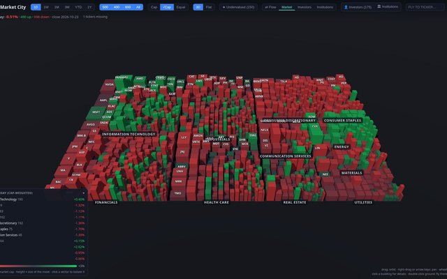
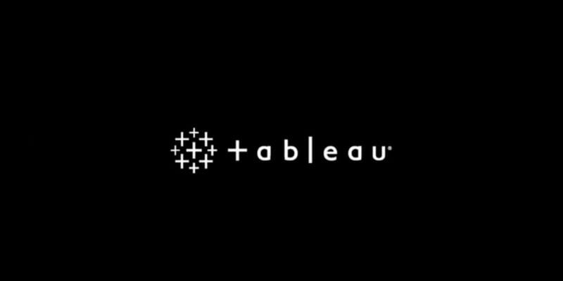
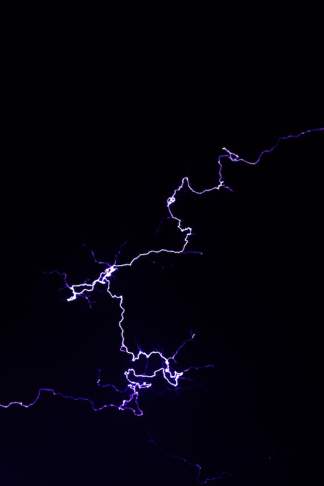
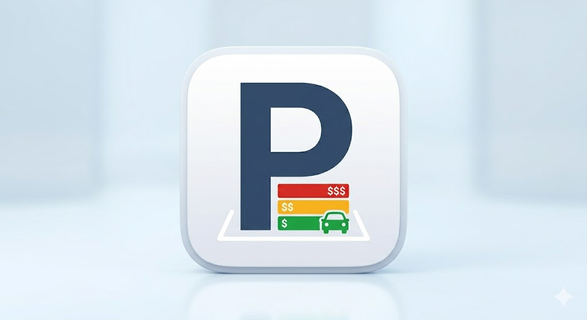
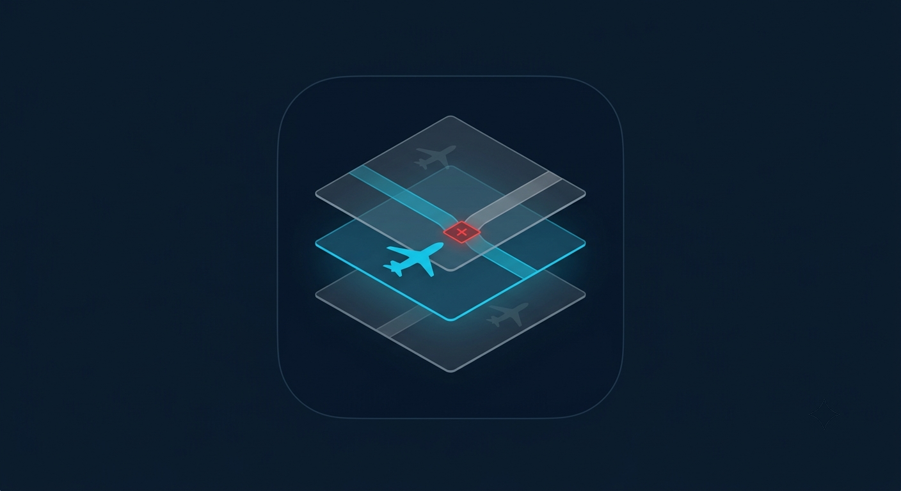

Product project
Y Exhibition Booth Design Tool
A browser-based tool for planning exhibition booths in 2D, reviewing the same layout in synchronized 3D, and sharing concept specifications.
Explore YEDTIT audit · Business intelligence · Product
I’m Yen-Chun, an IT audit and BI professional who turns complex data into useful insights—and builds practical digital products that make better workflows possible.
Selected work
A selection of analytics, machine learning, and automation projects.
Showing 11 projects
Product project
A browser-based tool for planning exhibition booths in 2D, reviewing the same layout in synchronized 3D, and sharing concept specifications.
Explore YEDT
Data visualization
The US S&P 1500 and Taiwan TWSE + TPEx markets as interactive 3D cities, where buildings are stocks sized by market cap and sectors are districts. Includes sector flow, DCF-based valuation, and 13F investor views.
View projectText analytics
Explore text data with natural language processing and topic modelling.
View project
Business intelligence
A collection of interactive dashboards and visual analytics.
View dashboards
Machine learning
Applying machine learning techniques to electricity trading data.
View project
Machine learning
A data science capstone focused on collision analysis.
View projectForecasting
An R-based analysis to forecast monthly sales.
View analysisAutomation
A small Python utility for combining CSV files.
View projectAutomation
A VBA workflow to compress Outlook attachments with password protection.
View project

Data project
A project exploring airway intersections and optimization.
View projectA little about me
I build analytics and audit solutions that turn complex processes into clearer decisions. My experience spans internal audit, BI, data pipelines, dashboard development, automation, and product design.
MSc in Big Data Analytics for Business · IÉSEG School of Management